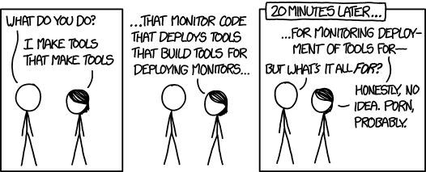
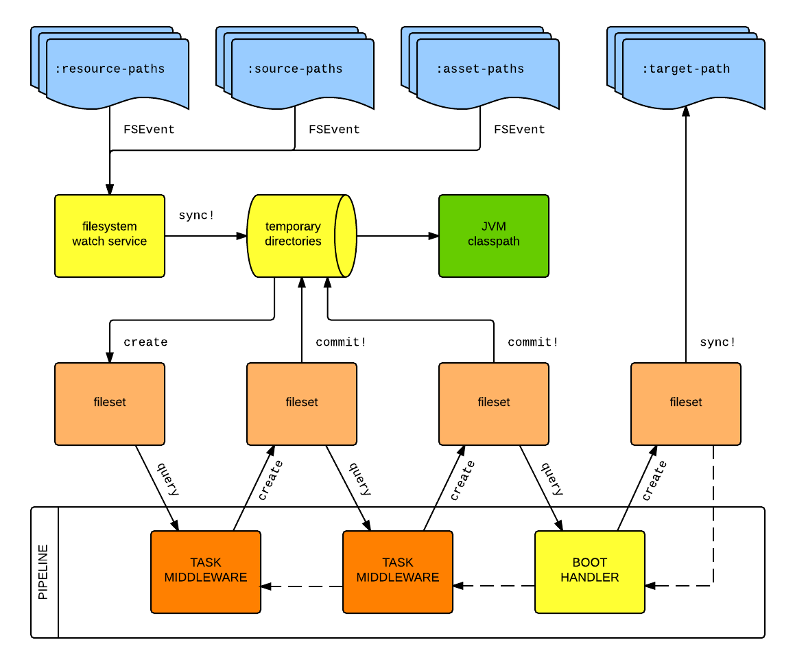

(defproject org.example/sample "1.0.0-SNAPSHOT" ; version "1.0.0-SNAPSHOT" :description "A sample project" :url "http://example.org/sample-clojure-project" :license {:name "Eclipse Public License - v 1.0" :url "http://www.eclipse.org/legal/epl-v10.html" :distribution :repo :comments "same as Clojure"} :min-lein-version "2.0.0" :dependencies [[org.clojure/clojure "1.3.0"] [org.jclouds/jclouds "1.0" :classifier "jdk15"] [net.sf.ehcache/ehcache "2.3.1" :extension "pom"] [log4j "1.2.15" :exclusions [[javax.mail/mail :extension "jar"] [javax.jms/jms :classifier "*"] com.sun.jdmk/jmxtools com.sun.jmx/jmxri]] [org.lwjgl.lwjgl/lwjgl "2.8.5"] [org.lwjgl.lwjgl/lwjgl-platform "2.8.5" :classifier "natives-osx" :native-prefix ""]] :pedantic? :abort :exclusions [org.apache.poi/poi org.apache.poi/poi-ooxml] :plugins [[lein-pprint "1.1.1"] [lein-assoc "0.1.0"] [s3-wagon-private "1.1.1"] [lein-foo "0.0.1" :hooks false] [lein-bar "0.0.1" :middleware false]] :repositories [["java.net" "http://download.java.net/maven/2"] ["sonatype" {:url "http://oss.sonatype.org/content/repositories/releases" :snapshots false :sign-releases false :checksum :fail :update :always :releases {:checksum :fail :update :always}}] ["snapshots" "http://blueant.com/archiva/snapshots"] ["releases" {:url "http://blueant.com/archiva/internal" :username "milgrim" :password :env}]] :mirrors {"central" {:name "central" :url "http://mirrors.ibiblio.org/pub/mirrors/maven2"} #"clojars" {:name "Internal nexus" :url "http://mvn.local/nexus/releases" :repo-manager true}} :local-repo "local-m2" :update :always :checksum :fail :offline? true :deploy-repositories [["releases" {:url "http://blueant.com/archiva/internal/releases" :signing {:gpg-key "0xAB123456"}}] ["snapshots" "http://blueant.com/archiva/internal/snapshots"]] :signing {:gpg-key "root@eruditorum.org"} :certificates ["blueant.pem"] :profiles {:debug {:debug true :injections [(prn (into {} (System/getProperties)))]} :1.4 {:dependencies [[org.clojure/clojure "1.4.0"]]} :1.5 {:dependencies [[org.clojure/clojure "1.5.0"]]} :dev {:resource-paths ["dummy-data"] :dependencies [[clj-stacktrace "0.2.4"]]} :uberjar {:aot :all} :repl {:plugins [[cider/cider-nrepl "0.7.1"]]}} :hooks [leiningen.hooks.difftest] :middleware [lein-xml.plugin/middleware] :implicit-middleware false :implicit-hooks false :main my.service.runner :aliases {"launch" ["run" "-m" "myproject.main"] "launch-version" ["run" "-m" "myproject.main" :project/version] "dumbrepl" ["trampoline" "run" "-m" "clojure.main/main"] "go" ^:pass-through-help ["run" "-m"] "deploy!" ^{:doc "Recompile sources, then deploy if tests succeed."} ["do" "clean" ["test" ":integration"] ["deploy" "clojars"]]} :release-tasks [["vcs" "assert-committed"] ["change" "version" "leiningen.release/bump-version" "release"] ["vcs" "commit"] ["vcs" "tag"] ["deploy"]] :prep-tasks [["protobuf" "compile"] "javac" "compile"] :aot [org.example.sample] :injections [(require 'clojure.pprint)] :java-agents [[nodisassemble "0.1.1" :options "extra"]] :javac-options ["-target" "1.6" "-source" "1.6" "-Xlint:-options"] :warn-on-reflection true :global-vars {*warn-on-reflection* true *assert* false} :java-cmd "/home/phil/bin/java1.7" :jvm-opts ["-Xmx1g"] :eval-in :leiningen :bootclasspath true :source-paths ["src" "src/main/clojure"] :java-source-paths ["src/main/java"] ; Java source is stored separately. :test-paths ["test" "src/test/clojure"] :resource-paths ["src/main/resource"] ; Non-code files included in classpath/jar. :target-path "target/%s/" :compile-path "%s/classy-files" :native-path "%s/bits-n-stuff" :clean-targets [:target-path :compile-path :foobar-paths [:baz-config :qux-path] "out"] :clean-non-project-classes true :checkout-deps-shares [:source-paths :test-paths ~(fn [p] (str (:root p) "/lib/dev/*"))] :test-selectors {:default (fn [m] (not (or (:integration m) (:regression m)))) :integration :integration :regression :regression} :monkeypatch-clojure-test false :repl-options { ;; Specify the string to print when prompting for input. ;; defaults to something like (fn [ns] (str *ns* "=> ")) :prompt (fn [ns] (str "your command for <" ns ">, master? " )) ;; What to print when the repl session starts. :welcome (println "Welcome to the magical world of the repl!") :init-ns foo.bar :init (println "here we are in" *ns*) :caught clj-stacktrace.repl/pst+ :skip-default-init false :host "0.0.0.0" :port 4001 :timeout 40000 :nrepl-handler (clojure.tools.nrepl.server/default-handler) :nrepl-middleware [my.nrepl.thing/wrap-amazingness (fn [handler] (fn [& args] (prn :middle args) (apply handler args)))]} :jar-name "sample.jar" :uberjar-name "sample-standalone.jar" :omit-source true :jar-exclusions [#"(?:^|/).svn/"] :uberjar-exclusions [#"META-INF/DUMMY.SF"] :auto-clean false :uberjar-merge-with {#"\.properties$" [slurp str spit]} :filespecs [{:type :path :path "config/base.clj"} {:type :paths :paths ["config/web" "config/cli"]} {:type :bytes :path "project.clj" :bytes ~(slurp "project.clj")} {:type :fn :fn (fn [p] {:type :bytes :path "git-log" :bytes (:out (clojure.java.shell/sh "git" "log" "-n" "1"))})}] :manifest {"Project-awesome-level" "super-great" "Class-Path" ~#(clojure.string/join \space (leiningen.core.classpath/get-classpath %)) :my-section-1 [["MyKey1" "MyValue1"] ["MyKey2" "MyValue2"]] :my-section-2 {"MyKey3" "MyValue3" "MyKey4" "MyValue4"} "Grunge-level" my.plugin/calculate-grunginess} :pom-location "target/" :parent [org.example/parent "0.0.1" :relative-path "../parent/pom.xml"] :extensions [[org.apache.maven.wagon/wagon-webdav "1.0-beta-2"] [foo/bar-baz "1.0"]] :pom-plugins [[com.theoryinpractise/clojure-maven-plugin "1.3.13" {:configuration [:sourceDirectories [:sourceDirectory "src"]] :extensions "true" :executions ([:execution [:id "echodir"] [:goals ([:goal "run"])] [:phase "verify"]])}] [org.apache.tomcat.maven/tomcat7-maven-plugin "2.1"]] :scm {:name "git" :tag "098afd745bcd" :url "http://127.0.0.1/git/my-project" :dir ".."} :pom-addition [:developers [:developer {:id "benbit"} [:name "Ben Bitdiddle"] [:url "http://www.example.com/benjamin"]]] :install-releases? false :deploy-branches ["master"] :classifiers {:tests {:source-paths ^:replace ["test"]} :classy :my-profile})

\(F_{user} → (T_1..T_n) → J_{cp} + F_{cp} + F_{asset} + E\)
(deftask build "Builds jar for deployment" [] (comp (aot) (pom) (uber) (jar) (target)))
f(x) = x' a(b(c(x))) = x' build(x) = deploy(test(compile(x))) = x'
(deftask foo "Task docstring." [...] ;; Task options (let [...] ;;Transducer-local state (fn middleware [next-handler] (fn handler [fileset] ;;Preprocessing goes here (let [fileset' (... fileset) fileset' (commit! fileset') result (next-handler fileset')] ;;Postprocessing goes here (Side effects) result)))))
\(F_{cp} + F_{asset} → F'_{cp} + F'_{asset}\)
